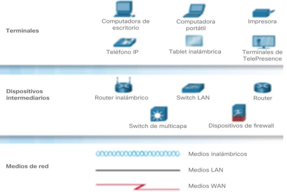
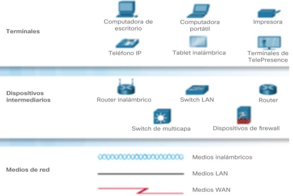

es el conjunto de instrumentos empleados para manejar informacion por medio de la computadora como el procesador de texto, la base de datos , graficadores , correo electronico, hojas de calculo , buscadores, programas de diseño, presentadores , redes de telecomunicaciones, ect
son el conjunto de recursos ,herramientas ,equipos ,programas informaticos ,aplicaciones ,redes y medios; que permiten la complicacion ,prosesamiento , almacenamiento ,transmision de informacion como: voz, datos ,texto,video e imagenes en pro de la eficiencia y la agilidad
| ventajas de las TIC | desventajas de las TIC | |
|---|---|---|
| en la educacion |
acceso a diversas fuentes de informacion.
comunicacion en tiempo real. mayor interaccion. desarrollo de nuevas habilidades fuera del circuito oficial. aprendizaje personalizado |
riesgo de desigualdad y exclusion.
pueden ser una fuente de distraccion. acceso a informacion de baja calidad. disminuyen las habilidades anuales. |
| en la sociedad |
democratizacion del acceso a la informacion.
optimizacion de tramites burocraticos. acceso a productos y servicios sin limites geograficos. acceso a nuevas tecnologias a precios accesibles. |
peligro de exposicion de datos personales.
acceso a informacion falsa . exclusion y desigualdad. |
| en las empresas |
eficiencia en la toma de decisiones.
nuevas modalidades de trabajo. nuevas oportunidades de crecicmiento. |
reduccion de puestos de trabajo.
riesgos de ciberataques. |
| en el hogar |
facilitan la comunicacion.
permiten el acceso a la educacion y el trabajo. |
menos interracion familiar.
contenido inapropiado. |
los beneficios de las TIC en la gestion de empresas te brindaran la oportunidad de analizar datos especificos para planificar negocios tambien te ofreceran diversas herramientas resolutivas para los problemas mas complejos y para planificar la crecida de tu negocio
es un conjunto de computadoras y software que estan que están conectados por dispositivos que reciben y envían información por transmisión guiada, transmisión inalámbrica o satélites de comunicación con el objetivo de compartir recursos como datos, programas y hardware.

| ventajas | desventajas |
|---|---|
|
compartir sofware y hardwere
compartier e intercambiar archivos entre los equipos Centralizar programas de gestión (los usuarios pueden acceder al mismo programa para trabajar en él simultáneamente). Realizar copias de seguridad automáticamente Organización efectiva mejora la comunicacion y la disponibilidad de informacion una vez implementadas son econimicas y ahorran tiempo comunicacion rapida y eficiente posibilidad de manejo y control a distancia de nuestra computadora Mejora la forma de trabajo individual y en equipo |
carece de independencia
existen muchos riesgos por lo que se deben tomar muchas medidasde seguridad se requiere personal capacitado para la administracion y mentenimiento de las redes El costo para la implementación inicial es alto Costos de operación y mantenimiento. Si se depende de la conexión a Internet y falla, se pueden ver las consecuencias en tiempo, dinero y esfuerzo |
cada computadora conecta a una red se denomina host o terminal.
los servidores son computadoras que proporcionan información a los terminales de la red. Por ejemplo: servidores de correo electrónico, servidores web o servidores de archivos.
los clientes son computadoras que envían solicitudes a los servidores para recuperar información, como una página web desde un servidor web o un correo electrónico desde un servidor de correo electrónico.
la infraestructura de red son todos los recursos que hacen posible la conectividad, la gestión, las operaciones comerciales y la comunicación de la red o Internet. La infraestructura de red comprende hardware y software, sistemas y dispositivos, y permite la informática y la comunicación entre usuarios, servicios, aplicaciones y procesos
 

los datos se originan con un dispositivo final,fluyen por la red y llegan a un dispositivo final.
| medio | ventajas | desventajas |
|---|---|---|
| cable coaxial |
permite la transicion de voz,datos y video de manera simultanea
Tiene un bajo costo y su instalación es sencilla y rápida. Cuenta con una banda ancha con capacidad de 10 Mb/segundo |
No hay modelación de frecuencias
Hace uso de conectores especiales para la conexión física. Ofrece poca inmunidad frente a los ruidos, aunque puede mejorarse con filtros. |
| cable de par trenzado (utp,stp,ftp). |
dan muy buenas prestaciones para redes de area local
facilidad de utilizacion e instalacion bajo costo de fabricacion y adquisicion gran capacidad de tranmision de datos en redes de area local rapida conectividad y actualizable |
no son inmunes al ruido
ancho de banda limitado distancia limitada y necesidad de repsticiones tasas de error a considerar en alta velocidad |
| fibra optica |
ocupa poco espacio
facil instalacion es liviana presenta gran recistencia es mas ecologica inmune a interferencias electromagneticas velos,eficaz y segura |
mas costoso que los medios de cobre para la misma distancia
son fragiles requieren de conversores envejecen ante la presencia del agua |
| inalambrico |
accesivilidad
facil instalacion mejor cobertura flexibilidad movil y portatil escalabilidad eficiencia |
seguridad
ancho de banda limitado velocidad son propensas a las interferencias alcance |

| red | definicion | alcance |
|---|---|---|
| red de area local(lan). | es una red que se limita a un area relativamente pequeña tal como un cuanto,un solo edificio | 200 m a 1km |
| red de area amplia (wan) | son redes informaticas que se extienden sobre una area geografica muy extensa ,pais o continentes ,utilizando medios como:satelites ,cables ,interoceanicos y fibra optica | miles de kilometros |
| red de area personal (pan) | es uan red de ordenadores usada por la comunicacion entre los dispositivos de la computadora cerca de una persona | 10 metros |
| red de area metropolitana (man) | es una red de alta velocidad (banda ancha) que da cobertura en un area geografica mas extensa,por ejemplo,una red que interconecte los edificios publicos de un municipio debtro de la localidad por medio de fibra optica | hasta 50 kilometros |
| red de area global (gan) | utiliza la infraestructura de fibra de vidrio de las redes de area amplia (wide area networks) y las agrupan mediante cables submarinos internacionales o transmision por satelite | miles de km |
| red de area de campus (can) | es una red inalambrica para comunicar varios edificios que se encuentran a mas de 1 km en el mismo campus o empresa | 1 a 3 km |
| red de area de almacenamiento (san) | Es una red propia para las empresas que trabajan con servidores y no quieren perder rendimiento en el tráfico de usuario, ya que manejan una enorme cantidad de datos | ilimitado |
Todos los nodos de la red se conectan a un solo cable principal, que sirve a todos los dispositivos. Este es uno de los tipos de redes más fáciles de configurara, pero al agregar demasiados dispositivos puede afectar la velocidad de la red a medida que la red troncal se congestiona. Este tipo de red también es increíblemente frágil, ya que una falla en cualquier punto de la red desconectara toda la red

Son redes punto a punto en las que cada nodo está conectado a su vecino inmediato en ambos lados, con datos que viajan alrededor del anillo en una dirección hasta que alcanza el nodo correcto. La falla de un solo nodo provocara una interrupción en toda la red. Esta forma de red no requiere un servidor para administrarla.

Todos los nodos se conectan a un solo punto central, como un enrutador. El nodo central actúa como un único punto de falla y un posible cuello de botella de tráfico, pero también es uno de los diseños más fáciles de diseñar y expandir.
Las topologías de árbol son una evolución del modelo de estrella e involucran múltiples redes estelares unidas por un bus central. Las redes de árbol generalmente se consideran como la topología más escalable, ya que es fácil expandirse mediante la adicción de redes de estrellas adicionales

Es cuando hay más de una conexión entre nodos. Esta puede ser una topologia de "malla completa", en la que cada nodo está vinculado a cada otro nodo, o una malla parcial, en la que solo algunos nodos utilizan conexiones múltiples. Esta forma de red es compleja de configurar y administrar, pero incluye un alto nivel de redundancia contra fallas de red.

Internet es un conjunto de centralizado de redes de comunicación interconectadas, que se utilizan la familia de protocolos TCP/IP, lo cual garantiza que las redes físicas heterogéneas que la componen constituyen una red lógica única de alcance mundial
una página web, página electrónica o página digital es un documento digital de carácter multimediático (capaz de incluir audio, video, texto y sus combinaciones), adaptado a los estándares de la World Wide Web (WWW) y a la que se puede acceder a través de un navegador Web y una conexión activa a internet.Las páginas Web se encuentran almacenadas en servidores a los que es posible acceder velozmente gracias a un sistema de protocolos de comunicación (HTTO).Las páginas Web se encuentran programadas en un formato HTML o XHTML, y se caracterizan por su relación entre unas y otras través de hipervínculos.Las páginas Web cumplen con la tarea de brindar información de cualquier índole y en cualquier estilo o grado de formalidad. Algunos permiten distintos grados de interacción entre usuarios o con alguna institución, como son las páginas de foros, servicios de citas o redes sociales, las páginas de compra y venta de bienes, las páginas de consulta o de contacto con empresas, instituciones gubernamentales o con ONG, e incluso de páginas de soporte técnico especializado
| tipos de paguina web | estatica | dinamica |
|---|---|---|
| caracteristicas |
SE PROGRAMAN EN LENGUAJE HTML
NO PERMITE LA INTERACCION CON EL USUARIO SON INFORMATIVAS,DOCUMENTALES Y NO INTERACTIVAS |
SE PROMGRAMAN EN LENGUAJE PHP
PERMITE LA INTERACCION CON EL USUARIO OFRECE UNA RESPUESTA A LOS REQUERIMIENTOS DEL USUARIO |